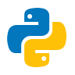

Monitorly
Session replay you can drop into any app: record every session, replay it like a video and get alerted when users hit errors or friction.
~100k sessions recorded so far3 lines to add it to any app<10s from a click to a replayable session6 friction signals, like rage clicks and OTP retries
A self-hosted, rrweb-powered session replay and analytics platform, built end to end, from the SDK to the dashboard. A three-line SDK records what users do, a Flask and Redis pipeline stores it without slowing the page, and a React dashboard replays each session like a video, live or after the fact. It has recorded around 100,000 sessions so far, and when something goes wrong, a Microsoft Teams alert opens the replay at that exact moment.
How it works
- A three-line SDK wraps rrweb and records the page, console logs, network calls and device details, with sensitive fields masked
- A Web Worker sends batches every 10 seconds to a Flask ingest service, which queues them on a Redis stream and returns at once
- A Python worker saves the recordings to Azure Blob Storage, indexes them in PostgreSQL and rolls up stats for each session
- Errors and friction signals page the team in Microsoft Teams, with a link that opens the replay at that moment
- The React dashboard replays sessions like a video, or follows one live as it happens
Features
- Drop-in SDK. Three lines add recording to any web app. It captures page snapshots, console logs, network requests and device details without blocking the page.
- Replay like a video. Play, pause, skip inactivity, change speed from 0.25x to 8x and jump to any moment. Seeking starts from the nearest full snapshot, so jumps land exactly.
- Watch sessions live. A live strip lists the sessions happening right now, and live mode follows one as it happens, smoothed so it plays at a natural pace.
- DevTools beside the video. A timeline of pages visited, plus network and UI event panels that scroll with playback. Clicking any row jumps the replay to that moment.
- Alerts in Teams. Errors and friction such as rage clicks, OTP retries and blocked form submits post to Microsoft Teams with a link to the exact second. Friction alerts are deduplicated, so a retry never pages twice.
- Privacy built in. Sensitive fields such as Social Security numbers, bank details and dates of birth are masked in the recording, and passwords always are.
- Fast by design. The ingest service only queues each batch and returns, and a separate worker does the slow storage work, so recording never slows the app.
- Session health scores. Analytics APIs score every session from its console errors and failed requests, and roll up trends, devices, pages and locations.
- rrweb
 JavaScript
JavaScript- React
- Material UI
- TanStack Query

Python- Flask
- Redis